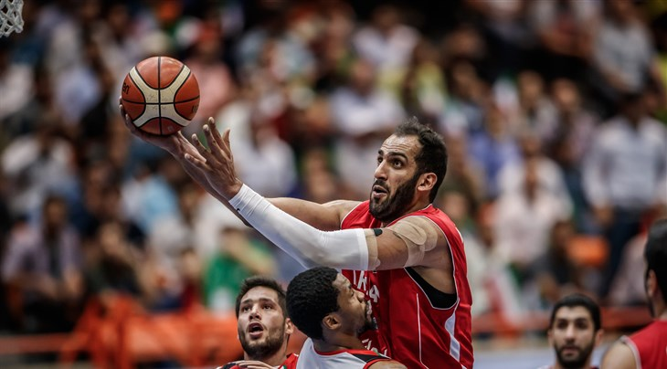
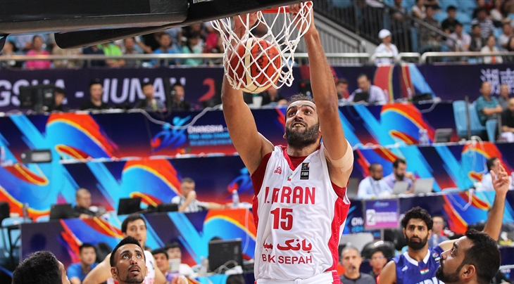

Top

自從2007年奪下男籃亞錦賽首座冠軍之後，伊朗便長期穩坐亞洲男籃霸主的位置，一直到現在他們仍是亞洲籃球排名第一的國家，也是唯二能在世界籃球排名進入前30名的亞洲國家。而伊朗隊之所以能在亞洲籃壇屹立不搖，王牌中鋒哈達迪（Hamed
Haddadi）在禁區統治級的主宰能力絕對是最重要的因子 。
身高218公分的哈達迪在亞洲籃壇是夢魘一般的存在，除了擁有靈活的低位單打腳步，以及柔軟的投籃手感，他還有內線球員較為缺乏的傳球能力，任何球員在禁區與他對抗幾乎只有挨打的份。在防守端上，哈達迪雖然移動速度較慢，但靠著人高手長的先天優勢，使得他的封蓋能力相當出色。然而他在場上卻常常做出一些粗魯的犯規動作，甚至是報復性的舉動，因此情緒失控也成為哈達迪打球的硬傷。
VIDEO
2008年北京奧運前夕，有數支NBA球隊向哈達迪開出合約，最終他選擇加入曼菲斯灰熊隊，希望能證明自己亞洲第一中鋒的身手。然而NBA畢竟匯集了全世界最好的籃球員，在競爭激烈的賽場上，哈達迪不過是一個負責消化垃圾時間的板凳邊緣人。不過他在NBA還是待了5年，一共出賽151場比賽，場均上場7分鐘拿下2.2分2.5籃板，最後他離開世界籃球的最高殿堂，轉投中國的CBA聯賽。
VIDEO
由於14歲就進入伊朗國內的籃球聯賽打球，現年才33歲的哈達迪，球技與體能都出現明顯的退化。本季他在CBA新疆飛虎隊平均只上場23.9分鐘，繳出10.5分10.7籃板的成績，和前幾季的數據有明顯落差。因此在球季結束後，他已經決定在下個球季轉往黎巴嫩聯賽，與先前介紹過的黎巴嫩傳奇球星法迪（Fadi
El Khatib）成為隊友，在職業生涯末期享受打球的樂趣。

今年暑假即將舉行的世界盃籃球賽，伊朗也順利在亞洲國家當中出線，然而在亞太區資格賽第二輪的賽事中，卻看不到老大哥哈達迪的身影，而他缺席的理由是因為對國家隊主帥沙欣塔布（Mehran
Shahintab）的發言感到不滿。哈達迪說：「首先，我必須批評沙欣塔布先生，因為他指責我對我的國家不忠。即便我的腿斷了，我也願意為伊朗男籃赴湯蹈火。籃球是我的摯愛，我可以為國家隊而死。」
雖然伊朗國家隊已經準備進行換血，世界盃資格賽的22人大名單當中就有9名23歲以下的新生代球員，倘若不追求成績的話，哈達迪是否回歸就顯得沒那麼重要，因此我們很有可能看不到他再度披上國家隊的戰袍。不過這十幾年來伊朗從無到有，一步步晉升成亞洲籃球的強權，哈達迪絕對功不可沒。少了這名西亞之柱，現在的伊朗就不會有亞錦賽的三座冠軍，也無法在亞洲籃壇繼續風光下去。